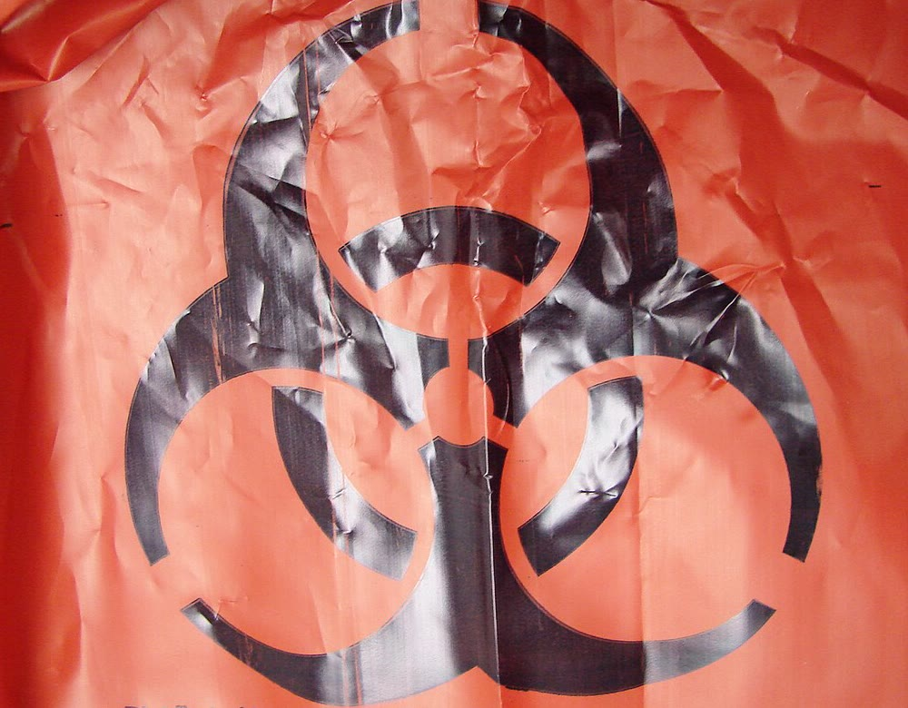

关注生殖性克隆人与禁止生物武器
本期导读
生殖性克隆 · 治疗性克隆 · 设计试管婴儿

视频原话 · 导读3 句
- 同学们好！这节课梳理人教版选择性必修三第四章第二节和第三节——关注生殖性克隆人，禁止生物武器。10.5s
- 高考常考生殖性克隆与治疗性克隆的区别、我国的态度，以及伦理问题的论述。7.6s
- 我们按六个考点梳理，每个考点都讲清楚怎么考、怎么做。5.5s
两种克隆的区别01#
| 比较项目 | 生殖性克隆 | 治疗性克隆 |
|---|---|---|
| 结果 | 独立生存的新个体 | 特定的细胞、组织和器官 |
| 目的 | 产生新个体 | 修复或替代受损的细胞、组织和器官，治疗疾病 |
| 共同技术 | 核移植 | 核移植 |
解题方法
看结果：产生个体是生殖性克隆；只得到细胞、组织、器官是治疗性克隆
视频原话4 句
- 考点一，生殖性克隆与治疗性克隆。生殖性克隆，是指通过克隆技术产生独立生存的新个体。9.8s
- 治疗性克隆，是指利用克隆技术产生特定的细胞、组织和器官，用它们来修复或替代受损的细胞、组织和器官，从而达到治疗疾病的目的。12.9s
- 两者都用到了核移植技术，区别在于目的：一个是产生个体，一个是治疗疾病。7.4s
- 解题方法：看结果——产生个体就是生殖性克隆；只得到细胞、组织、器官就是治疗性克隆。9.4s
我国对克隆人的态度02#
禁止生殖性克隆人；不反对治疗性克隆（有效监控、严格审查）
不赞成
不允许
不支持
不接受
治疗性克隆：在有效监控和严格审查下不反对
反对克隆人的理由：违反人类伦理道德；技术不成熟，可能孕育出有严重生理缺陷的孩子
易错
我国禁止的是生殖性克隆，不是所有克隆；对治疗性克隆不反对
视频原话5 句
- 考点二，我国对克隆人的态度。我国政府的态度是：禁止生殖性克隆人。7.3s
- 坚持“四不”原则：不赞成、不允许、不支持、不接受任何生殖性克隆人的实验。7.7s
- 但不反对治疗性克隆，前提是要进行有效的监控和严格审查。6.3s
- 反对克隆人的理由：克隆人严重违反了人类伦理道德；克隆技术尚不成熟，可能孕育出有严重生理缺陷的孩子。10.3s
- 易错：我国禁止的是生殖性克隆，不是所有克隆；对治疗性克隆不反对。7.2s
试管婴儿与设计03#
| 比较项目 | 试管婴儿 | 设计试管婴儿 |
|---|---|---|
| 目的 | 解决不孕不育 | 避免遗传病、提供配型相合的造血干细胞 |
| 移植前 | 不需要诊断 | 胚胎遗传学诊断 |
| 技术 | 体外受精、早期胚胎培养、胚胎移植 | 同左 + 遗传学诊断 |
| 生殖方式 | 有性生殖 | 有性生殖 |
易错
区别在于设计试管婴儿多了遗传学诊断；不能借此随意选择性别等非医学需要的性状
视频原话5 句
- 考点三，试管婴儿与设计试管婴儿。试管婴儿：通过体外受精和胚胎移植，解决不孕不育的问题。10.0s
- 设计试管婴儿：在胚胎移植前，要对胚胎进行遗传学诊断，选择符合要求的胚胎再移植。8.8s
- 设计试管婴儿可用于避免遗传病，或者为患病的哥哥姐姐提供配型相合的造血干细胞等。8.5s
- 两者都属于有性生殖，都用到体外受精、早期胚胎培养和胚胎移植。6.9s
- 易错：两者的区别在于设计试管婴儿多了遗传学诊断；不能借此随意选择性别等非医学需要的性状。9.5s
生物武器的种类04#
致病菌类
如炭疽杆菌
病毒类
如天花病毒
生化毒剂类
如肉毒杆菌毒素
转基因技术：把致病能力、抗药性等基因转入病原体 → “超级”病原体
特点：致病能力强、攻击范围广；可通过空气、水、食物等多种途径传播
解题方法
判断是否属于生物武器：看它是不是利用生物或其毒素来致病、致死
视频原话4 句
- 考点四，生物武器的种类和特点。生物武器的种类包括：致病菌类、病毒类和生化毒剂类等。9.3s
- 还可以通过转基因技术，把致病能力、抗药性等基因转入病原体，制造出新的“超级”病原体。8.7s
- 生物武器的特点：致病能力强、攻击范围广，可以通过空气、水、食物等多种途径传播。8.5s
- 考法：判断哪些属于生物武器。解题方法：看它是不是利用生物或其毒素来致病、致死，比如炭疽杆菌、天花病毒、肉毒杆菌毒素。13.3s
我国对生物武器态度05#
1972 年，多国签署《禁止生物武器公约》
不发展
不生产
不储存
并反对生物武器及其技术和设备的扩散（任何情况下）
| 对象 | 我国的态度 |
|---|---|
| 生殖性克隆人 | “四不”：不赞成、不允许、不支持、不接受 |
| 生物武器 | “三不”：不发展、不生产、不储存 + 反对扩散 |
易错
克隆人是“四不”，生物武器是“三不”加反对扩散，两组不要记混
视频原话4 句
- 考点五，我国对生物武器的态度。1972年，多国签署了《禁止生物武器公约》。8.0s
- 我国的态度是：在任何情况下，不发展、不生产、不储存生物武器。6.7s
- 并反对生物武器及其技术和设备的扩散。4.2s
- 易错：克隆人是“四不”——不赞成、不允许、不支持、不接受；生物武器是“三不”加反对扩散。两组不要记混。10.8s
伦理问题答题思路06#
① 技术
它是什么、能做什么
② 利弊
对个人、社会、生态的好处和风险
③ 法规
如禁止生殖性克隆、禁止生物武器
④ 立场
科技是“双刃剑”，趋利避害
解题方法
伦理题四步走：技术 → 利弊 → 法规 → 立场，观点明确，有理有据
视频原话5 句
- 考点六，生物技术伦理问题的答题思路。第一，明确技术本身：它是什么、能做什么。8.6s
- 第二，分析利与弊：对个人、社会、生态可能带来的好处和风险。6.8s
- 第三，联系法规和我国态度：比如禁止生殖性克隆、禁止生物武器。7.1s
- 第四，表明理性立场：科学技术是一把“双刃剑”，要趋利避害，在伦理和法律的框架内发展。9.0s
- 解题方法：伦理题四步走——技术、利弊、法规、立场，观点明确，有理有据。8.1s
易错速查✓
先自己判断，再点按钮查看对错与解析。
- 1治疗性克隆的目的是产生新个体说法错误：目的是获得细胞、组织用于治疗
- 2我国不反对治疗性克隆说法正确。
- 3设计试管婴儿与试管婴儿技术完全相同说法错误：设计试管婴儿多了遗传学诊断
- 4生物武器包括致病菌、病毒、生化毒剂等说法正确。
- 5我国在特殊情况下可以发展生物武器说法错误：任何情况下都不发展、不生产、不储存
- 6设计试管婴儿可以用于选择性别说法错误：主要用于治疗疾病，不能随意选择性别
四不三不记牢，伦理题有理有据！
视频原话 · 易错速查5 句
- 最后，用六道判断题检验一下。3.6s
- 判断一：治疗性克隆的目的是产生新个体？错。判断二：我国不反对治疗性克隆？对。10.2s
- 判断三：设计试管婴儿与试管婴儿技术完全相同？错，多了遗传学诊断。判断四：生物武器包括致病菌、病毒、生化毒剂等？对。14.1s
- 判断五：我国在特殊情况下可以发展生物武器？错。判断六：设计试管婴儿可以用于选择性别？错。11.3s
- 六个考点串成一条线：四不三不记牢，伦理题有理有据。选择性必修三全部讲完，我们下次再见！9.7s
图片来源
图片来源：Wikimedia Commons —— Forest and Kim Starr《Biohazard sign at ASAP quarantine building Kahului, Maui》CC BY 3.0 US（裁切）
Photo: Forest and Kim Starr, CC BY 3.0 US